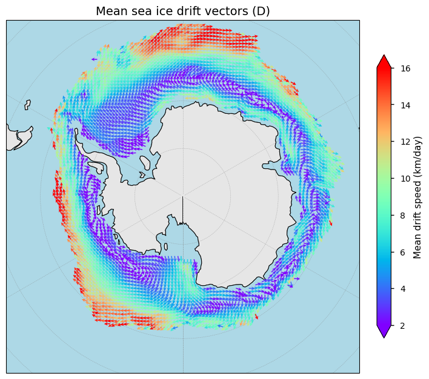
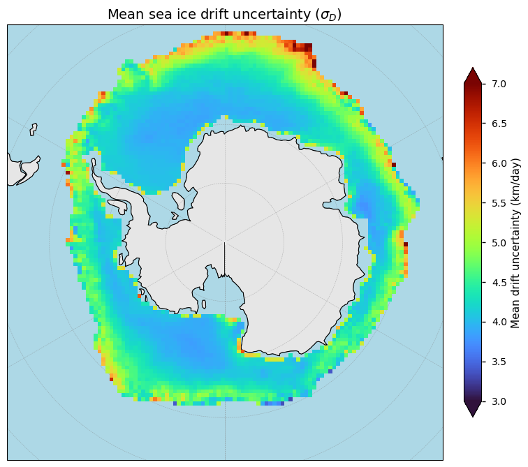
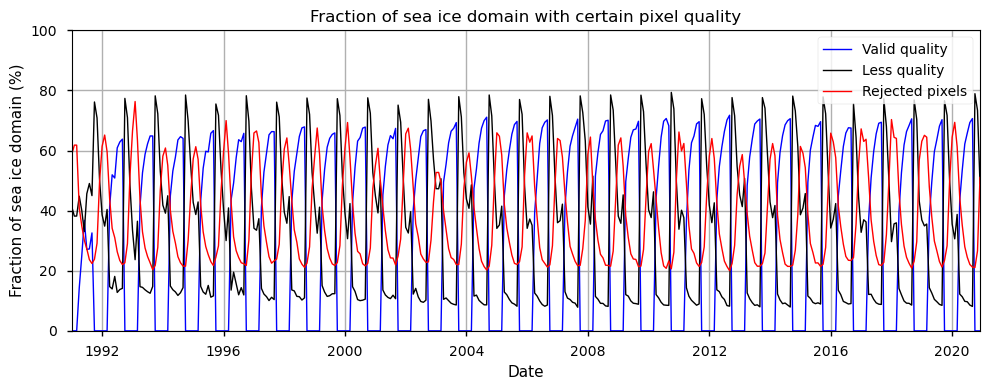
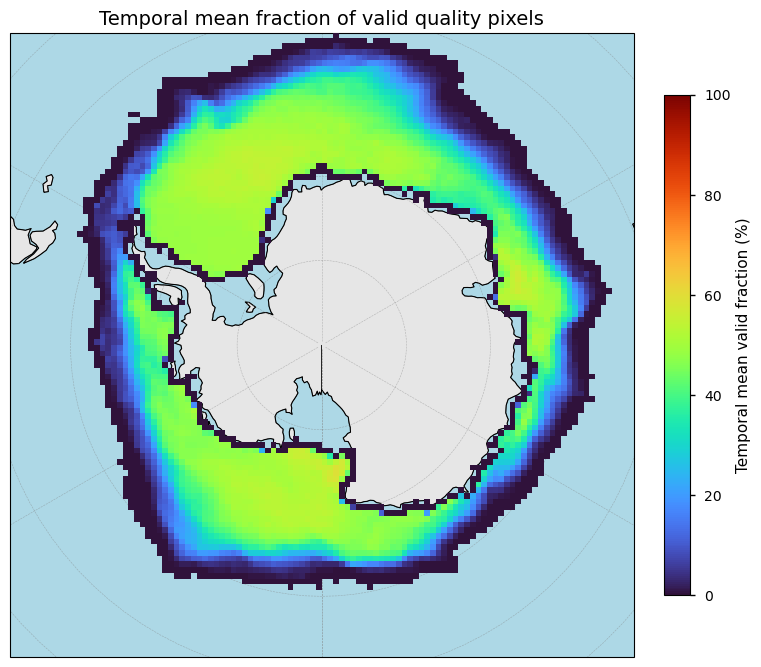
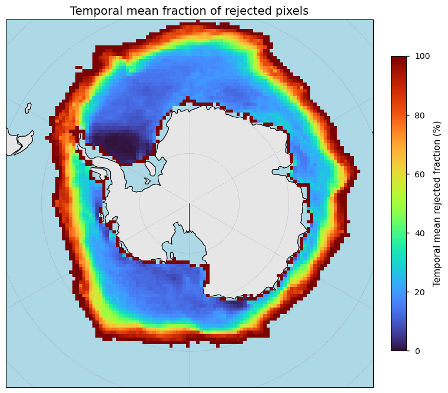
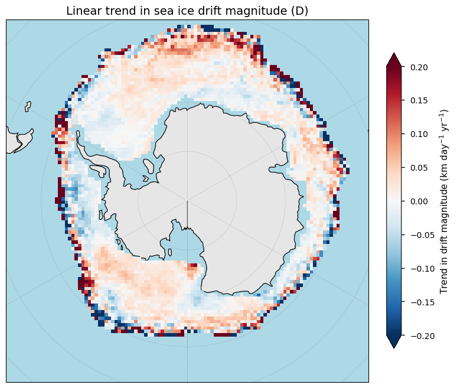
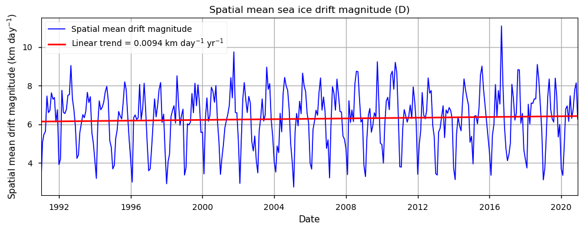

1.6.1. Sea ice drift from satellite observations: spatio-temporal coverage and consistency of Antarctic sea ice drift for variability and trend assessments#
Production date: 31-03-2026
Dataset version: 1.0
Produced by: Yoni Verhaegen and Philippe Huybrechts (Vrije Universiteit Brussel)
🌍 Use case: Short and long-term variability and change assessment of Antarctic sea ice transport#
❓ Quality assessment question#
“Is the spatial and temporal coverage of the C3S sea ice drift dataset sufficiently adequate to capture the variability and changes in Antarctic sea ice motion?”
Satellite observations provide an essential means of monitoring the motion of sea ice and its role in the redistribution of ice across the polar oceans. Sea ice drift strongly influences the transport of freshwater and is therefore a key component of the polar climate system. Understanding long-term variability and potential trends in sea ice transport requires datasets that provide sufficient spatial and temporal coverage as well as consistent retrievals over multi-decadal periods. In this context, the ‘Sea ice drift daily gridded data derived from satellite observations’ on the Climate Data Store (CDS), provided by the Ocean and Sea Ice Satellite Application Facility (OSI SAF), offers daily sea ice drift vectors and their associated uncertainties for both hemispheres on a 75 km equal area projection grid. They can be interpreted as sea ice motion: the displacement of sea ice within a certain time period [1].
The sea ice drift dataset offers winter season satellite-derived estimates, supplemented with model data during the summer months, of sea ice motion and therefore offers valuable data for investigating large-scale sea ice circulation patterns. However, before such a dataset can be used for trend assessments, its suitability must be evaluated in terms of its spatio-temporal coverage and consistency. This assessment therefore examines whether the C3S sea ice drift dataset provides adequate coverage and consistency to be able to conduct an analyses of short/long-term variability and trends sea ice transport. For that, we use the dataset version 1.0 on the CDS and specifically focus on the Antarctic region.
🚨 Although this notebook deals with the Antarctic sea ice only, sea ice drift data for the Arctic region are also available.
📢 Quality assessment statements#
These are the key outcomes of this assessment
The C3S sea ice drift product offers daily sea ice drift vectors and their associated uncertainties for both hemispheres on a 75 km equal-area projection grid and also includes pixel-level quality flags, as well as quantitative uncertainty estimates. The daily temporal resolution of the dataset is furthermore excellent for many applications and analyses, though the 75 km spatial resolution remains relatively coarse with respect to the minimum GCOS requirement of 50 km. A spatio-temporal coverage analysis through the use of the quality flags, however, reveals that the degree of valid pixel retrievals is generally higher during the winter months and over robust, closed sea ice. Data with relatively less quality and higher uncertainty values are, however, found during the summer months and near coastal regions or around the sea ice edge (where satellite-based retreival algorithms exhibit difficulties and additional processing is often required).
With respect to the use case, the C3S sea ice drift product is found to be suitable to derive short and long-term variability and trends of Antarctic sea ice motion, as (1) quality and rejection flags are available to eliminate bad quality data if desired, (2) the temporal resolution is consistent at daily spaced intervals, and (3) the number of years (since 1991) is sufficient to filter out intra/interannual variability. The time series length is also compliant with the minimum WMO requirement of 30 years. However, when interpreting these signals, users should keep in mind that data during the summer months and over pixels that are close to the sea ice edge (for which data acquisition using satellites is difficult) should be handled with care.
📋 Methodology#
Dataset description#
The C3S OSI SAF product combines data from (1) multiple microwave radiometers using feature-tracking techniques to estimate the displacement of sea ice patterns between consecutive satellite images in the winter season, and (2) model-driven sea ice drift fields using ERA5 10 m wind data and a tuned free-drift model in the summer season. The corresponding displacements are converted into drift vectors representing sea ice motion over the time interval between satellite images. Post-processing involves, amongst others, gap-filling by interpolation. To ensure temporal consistency, data from different sensors are homogenized and merged into a continuous data record covering several decades (1991-2020). The dataset provides the zonal and meridional components of sea ice drift on an equal area projection grid, as well as their uncertainty estimates (provided as 1-sigma errors). Data are delivered in NetCDF format and include additional relevant information such as rejection and quality flags. All data follow a consistent projection with drift values expressed in km per day [1].
Structure and (sub)sections#
1. Data preparation and processing
2. Patterns of Antarctic sea ice motion and its uncertainty
3. Spatial and temporal coverage of sea ice drift data
📈 Analysis and results#
1. Data preparation and processing#
1.1 Import packages#
First we load the packages:
1.2 Define request and download#
Then we define the parameters, i.e. for which years the data should be downloaded:
Then we define requests for download from the CDS and download and transform the sea ice data. We resample the data from daily to monthly values to decrease the data size:
Here, we define a function that resamples all data to monthly averaged data, except for the status_flag variable:
Finally, we download the data and apply the transformation function:
collection_id = 'satellite-sea-ice-drift'
100%|██████████| 30/30 [00:02<00:00, 12.73it/s]
collection_id = 'satellite-sea-ice-concentration'
100%|██████████| 30/30 [00:00<00:00, 44.13it/s]
/data/common/miniforge3/envs/wp5/lib/python3.12/site-packages/earthkit/data/readers/netcdf/fieldlist.py:202: FutureWarning: In a future version of xarray the default value for data_vars will change from data_vars='all' to data_vars=None. This is likely to lead to different results when multiple datasets have matching variables with overlapping values. To opt in to new defaults and get rid of these warnings now use `set_options(use_new_combine_kwarg_defaults=True) or set data_vars explicitly.
return xr.open_mfdataset(
1.3 Display and inspect data#
We can read and inspect the data. Let us print out the data to inspect its structure:
<xarray.Dataset> Size: 329MB
Dimensions: (time: 360, yc: 144, xc: 144)
Coordinates:
* time (time) datetime64[ns] 3kB 1991-01-01 ... 20...
* yc (yc) float64 1kB 5.362e+03 ... -5.362e+03
* xc (xc) float64 1kB -5.362e+03 ... 5.362e+03
latitude (yc, xc) float32 83kB dask.array<chunksize=(144, 144), meta=np.ndarray>
longitude (yc, xc) float32 83kB dask.array<chunksize=(144, 144), meta=np.ndarray>
Data variables:
Lambert_Azimuthal_Equal_Area (time) float64 3kB dask.array<chunksize=(12,), meta=np.ndarray>
t0 (time, yc, xc) datetime64[ns] 60MB dask.array<chunksize=(12, 144, 144), meta=np.ndarray>
t1 (time, yc, xc) datetime64[ns] 60MB dask.array<chunksize=(12, 144, 144), meta=np.ndarray>
lat1 (time, yc, xc) float32 30MB dask.array<chunksize=(12, 144, 144), meta=np.ndarray>
lon1 (time, yc, xc) float32 30MB dask.array<chunksize=(12, 144, 144), meta=np.ndarray>
dX (time, yc, xc) float32 30MB dask.array<chunksize=(12, 144, 144), meta=np.ndarray>
dY (time, yc, xc) float32 30MB dask.array<chunksize=(12, 144, 144), meta=np.ndarray>
status_flag (time, yc, xc) float64 60MB dask.array<chunksize=(12, 144, 144), meta=np.ndarray>
uncert_dX_and_dY (time, yc, xc) float32 30MB dask.array<chunksize=(12, 144, 144), meta=np.ndarray>
Attributes: (12/42)
title: Global Sea Ice Drift Climate Data Record Versi...
summary: This climate data record of sea ice drift vect...
topiccategory: Oceans ClimatologyMeteorologyAtmosphere
keywords: GCMDSK:Earth Science > Cryosphere > Sea Ice > ...
keywords_vocabulary: GCMDSK:GCMD Science Keywords:https://gcmd.eart...
geospatial_lat_max: -17.021584
... ...
tracking_id: fc94c6b1-de36-452d-8703-71036f9f5288
naming_authority: int.eumetsat
Conventions: CF-1.7,ACDD-1.3
standard_name_vocabulary: CF Standard Name Table (Version 78, 21 Septemb...
product_name: osi_saf_sea_ice_drift_climate_data_record
doi: 10.15770/EUM SAF OSI 0012Here, the downloaded set of the C3S OSI SAF sea ice drift data provides daily (here we transformed them to monthly averages) satellite and model-derived sea ice drift vectors \(D\) on a 75 km Lambert Azimuthal Equal Area grid covering the entire Arctic. Sea ice drift components (dX, dY) are provided in grid coordinates together with corresponding latitude/longitude fields and uncertainty estimates (uncert_dX_and_dY). The total drift speed and its direction can be computed as the Euclidean norm of (dX, dY):
\(D = \sqrt{D_x^2 + D_y^2}\)
where \(D_x\) and \(D_y\) are the zonal and meridional components of the sea ice drift (in km/day) respectively, defined within the projected grid. In this case, we also downloaded the sea ice thickness and sea ice concentration fields to use them later in this notebook for calculating the total sea ice volume export through Fram Strait. We regridded and resampled these data into a common spatial (i.e. a 75 km spatial resolution) and temporal (i.e. a monthly temporal resolution) frame so that all data align. A variable status_flag further indicates the quality of the data. A status_flag value of 30 indicates vectors with nominal quality (i.e. the vector is retrieved purely from satellite observations and independent of other vectors).
2. Patterns of Antarctic sea ice motion and its uncertainty#
2.1 Average sea ice drift velocities#
We begin by plotting the sea ice drift vectors averaged between the beginning and end period that we selected for the sea ice drift data with a defined plotting function. Let us therefore first define a plotting function that uses the displacement components dX and dY to define a vector field:
With this function, let us plot the data:

Figure 1. Average sea ice drift vectors across the Antarctic region from the C3S data. It must be noted that the period over which the data are averaged in this figure may differ, depending on available data (e.g. due to seasonal sea ice extent variations or potential missing data).
A notable feature in the image above is the presence of the Antarctic Circumpolar Current (ACC), which is an ocean current that flows clockwise (as seen from the South Pole) from west to east around Antarctica. Drift speeds are relatively slow near the coast and increase towards the outer sea ice edge, where the ice is more mobile and influenced by stronger winds and ocean currents. Regionally, the flow is modulated by large gyres such as the Weddell and Ross Sea circulations, which contribute to the export of sea ice away from Antarctica. The patterns agree well with independent assessments (e.g. [2]). Data are provided on a 75 km grid, which is slightly too coarse with respect to the GCOS threshold of 50 km [3].
2.2 Sea ice drift uncertainty#
Let us now investigate the uncertainties of the sea ice drift data. We begin by plotting a time series of the reported uncertainties within the data uncert_dX_and_dY. The total error of a sea ice drift estimate is theoretically given by both a precision (random) and an accuracy (systematic) error. For the sea ice drift data, the product only deals with precision errors in the form of 1 standard deviation. In this case, the uncertainty can be expressed as \(\sigma_D\). Let us now inspect the 2D field of these uncertainties:

Figure 2. Time-averaged sea ice drift uncertainty over the Antarctic region from the C3S data.
The above figure shows the spatial pattern of the time-averaged uncertainty related to the sea ice drift data over the Antarctic area. Uncertainties are lowest over closed sea ice, but clearly increase toward the dynamically active export regions. Peak values generally occur near the Antarctic coastal regions and near the sea ice edge. Let us plot some statistics (i.e. its minimum, maximum and average value) of the error variable over the entire domain:
uncert_dX_and_dY -> mean: 4.2224 km/day, min: 2.2854 km/day, max: 13.1641 km/day
This reveals that the overall error meets the GCOS threshold of 5 km/day (when expressed as 1-sigma precision errors) [3]. With this in mind, we can switch to the spatio-temporal coverage of the data.
3. Spatial and temporal coverage of sea ice drift data#
3.1 Time series of valid data retrievals#
Let us now further inspect the spatial and temporal coverage of the dataset. We do this by making use of the status_flag variable that is present in the data. This analysis is done to check whether the data have sufficient coverage to be able to perform a reliable analysis of long-term variability and change assessments.
For that, we use the description of the status_flag variable in the Product User Guide. Hence, we calculate the number of pixels within the sea ice drift domain with a nominal data quality (status_flag = 30), less quality (status_flag between 20 and 29) and with rejected data (status_flag between 0 and 19), and compare it to a sea ice mask from the sea ice concentration variable on the CDS. Following NSIDC recommendations, we create a sea ice mask for all pixels where the sea ice concentration has a value of 15% or larger. This results in the following time series:

Figure 3. Time series of the fraction of pixels with valid data, less quality data and rejected data (at monthly-spaced temporal intervals) of the C3S Antarctic sea ice drift dataset when compared to the sea ice extent with a sea ice concentration >= 15%.
We observe that pixels with less quality or rejected data are especially present during the summer months. Here, data are removed (due to, for example, processing failures or missing input data), or are of less quality (the vector was, for example, retrieved using only the wind drift model or was interpolated from the neighbouring vectors). During the summer months, data are thus only derived from the wind drift model (of which the outcome also depends on the quality of the ERA5 input data), as satellite-based data retrieval fails due to surface melt and higher atmosphere wetness [1]. A status_flag value of 30 indicates vectors with nominal/valid quality (i.e. the vector is retrieved purely from satellite observations and independent of other vectors). During the winter months, the fraction of pixels with nominal data quality exhibits values of around 60-70% when compared to the sea ice mask.
Let us now check where in the spatial domain these values generally occur.
3.2 Spatial patterns of valid data retrievals#
We can now also check the spatial patterns of these valid pixels. Therefore, we plot the temporal average of the valid fraction over each pixel. Let us therefore define a function that plots the 2D spatial distribution of valid pixel fractions:

Figure 4. Spatial pattern of the fraction of pixels with valid data (i.e. status_flag = 30) of the C3S Antarctic sea ice drift dataset when compared to the sea ice extent with a sea ice concentration >= 15%.
From the image above, it is especially obvious that locations too close to land or the sea ice edge exhibit difficulties during processing and often have less quality or are rejected. These vectors then often require additional processing or are removed from the data. The most reliable data therefore occur over robust, closed sea ice. With the above analysis in mind, we can thus conclude that sea ice data exhibit higher quality during the winter months and over close sea ice regions. These data also generally exhibit lower uncertainty values.
Let us now check where the rejected data are:

Figure 5. Spatial pattern of the fraction of pixels with rejected data (i.e. status_flag < 20) of the C3S Antarctic sea ice drift dataset when compared to the sea ice extent with a sea ice concentration >= 15%.
Again, we note a similar pattern: data close to the sea ice edge and near the coastal regions should be handled with care. Let us now further inspect the spatial and temporal trends of the sea ice drift data.
4. Antarctic sea ice drift variability and trends#
4.1 Spatial distribution of linear trends#
With the information above in mind, we can now proceed to calculate the linear trend of sea ice drift magnitudes over each pixel in the domain. To determine whether the temporal extent of the dataset is sufficient to capture reliable spatial/temporal trends and to use these trends as indicators of climatic changes, we turn to the literature. The Intergovernmental Panel on Climate Change (IPCC) and World Meteorological Orginization (WMO) often use 30 years as a standard period for climate normals and trend analysis to ensure that the analysis captures meaningful climatic changes rather than short-term (intra/interannual) fluctuations. We therefore consider these guidelines to be likewise applicative for sea ice drift.
Let us now plot the data below.

Figure 6. Spatial distribution of linear trends of Antarctic sea ice drift data from the C3S dataset.
The figure above shows the spatial distribution of linear trends in Antarctic sea ice drift magnitude over the study period. Trends seem to vary regionally but most of the domain exhibits only weak trends with magnitudes close to zero. Larger positive and negative trends occur mainly near the sea ice edge, but the signals become more noisy in these regions. Together with the analysis of the valid pixel retrievals above, which indicated that data near the sea ice edge are often of less quality, it is therefore clear that the trends near the sea ice edge should be handled and interpreted with care.
4.2 Time series of sea ice drift trends#
Let us now quantify the spatially averaged sea ice drift as a time series:

Figure 7. Time series and linear trend of spatially averaged Antarctic sea ice drift data (at monthly-spaced temporal intervals) from the C3S dataset.
The spatially averaged sea ice drift magnitude shows a strong month-to-month variability throughout the period 1991–2020, with values typically varying between ca. 3 and 9 km day⁻¹. The sea ice tends to speed up during the winter months and slow down during the summer season. The fitted linear trend indicates only a small positive increase in the mean drift magnitude of approximately 0.009 km day⁻¹ yr⁻¹ over the study period. This would suggest a slight long-term acceleration of the spatially averaged sea ice drift speed, but the short-term variability clearly dominates the signal in the time series. However, it is important to keep in mind the spatial and temporal fraction of valid pixel retrievals from the sections above while interpreting these data.
5. Short summary and take-home messages#
To be able to label a sea ice-related dataset as “quality rich” and for climate change analysis/monitoring to become reliable and possible, the dataset should at least exhibit a comprehensive spatial coverage (i.e. hemispheric), a long and continuous temporal coverage (> 30 years), quantified and transparent pixel-by-pixel uncertainty estimates that meet international proposed thresholds, a validation effort or a comparison to (theoretical) models, and an adequate spatio-temporal resolution (cfr. the “Maturity Matrix” [4]).
In that regard, the C3S sea ice drift dataset provides daily, pixel-by-pixel estimates of sea ice drift, together with associated quality flags and quantitative uncertainty estimates in the form of 1-sigma precision errors for both the Arctic and Antarctic region. In this notebook, the dataset was analysed with respect to its spatial and temporal coverage over the Antarctic region in the context of long-term variability and change assessments. It is found that the sea ice drift product are at this stage found to be suitable to derive short and long-term variability and trends, as the temporal resolution is consistent at a daily basis and the number of consecutive years is sufficient to filter out interannual variability. However, a spatio-temporal coverage analysis reveals that the dataset holds regions and time periods that exhibit sea ice drift data with generally less quality. In particular, data during the summer months and pixels that are close to the sea ice edge (for which data acquisition using satellites is difficult) should be handled with care. These data also generally exhibit higher uncertainty values.
All in all, it can be stated that the C3S sea ice drift dataset is generally a mature and quality-rich dataset that allows users to capture the general state and spatio-temporal changes of sea ice motion over both polar regions.
ℹ️ If you want to know more#
“Sea ice drift daily gridded data derived from satellite observations” on the CDS
Documentation on the CDS (Copernicus Knowledge Base).
C3S EQC custom functions,
c3s_eqc_automatic_quality_controlprepared by B-Open.
References#
[1] Lavergne, T. and Down, E. (2023). A climate data record of year-round global sea-ice drift from the EUMETSAT Ocean and Sea Ice Satellite Application Facility (OSI SAF), Earth Syst. Sci. Data, 15, 5807–5834, https://doi.org/10.5194/essd-15-5807-2023
[2] Schmitt, C., Kottmeier, Ch., Wassermann S., and Drinkwater M. (2004). Atlas of Antarctic Sea Ice Drift, Institut für Meteorologie und Klimaforschung, Universität Karlsruhe. Available from: https://data.meereisportal.de/eisatlas/
[3] GCOS (Global Climate Observing System) (2022). The 2022 GCOS ECVs Requirements (GCOS-245). World Meteorological Organization: Geneva, Switzerland. doi: https://library.wmo.int/idurl/4/58111
[4] Yang, C. X., Cagnazzo, C., Artale, V., Nardelli, B. B., Buontempo, C., Busatto, J., Caporaso, L., Cesarini, C., Cionni, I., Coll, J., Crezee, B., Cristofanelli, P., de Toma, V., Essa, Y. H., Eyring, V., Fierli, F., Grant, L., Hassler, B., Hirschi, M., Huybrechts, P., Le Merle, E., Leonelli, F. E., Lin, X., Madonna, F., Mason, E., Massonnet, F., Marcos, M., Marullo, S., Muller, B., Obregon, A., Organelli, E., Palacz, A., Pascual, A., Pisano, A., Putero, D., Rana, A., Sanchez-Roman, A., Seneviratne, S. I., Serva, F., Storto, A., Thiery, W., Throne, P., Van Tricht, L., Verhaegen, Y., Volpe, G., and Santoleri, R. (2022). Independent Quality Assessment of Essential Climate Variables: Lessons Learned from the Copernicus Climate Change Service, B. Am. Meteorol. Soc., 103, E2032–E2049, https://doi.org/10.1175/Bams-D-21-0109.1